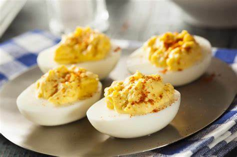

Deviled Eggs

The Simple Party Saviour!
Deviled eggs are a simple, yet beloved addition to any cookout
or potluck!
Ingredients
- Eggs
- Salt
- Paprika
- Mustard
- Mayonnaise
Steps
- Hard Boil the eggs.
- Cut the eggs in half.
- Scoop out the yolks and put in a bowl.
- Add Mustard and mayo to the yolks and mix.
- Use a spoon to add the mix back to the eggs.
- Top the eggs with salt and paprika to taste.